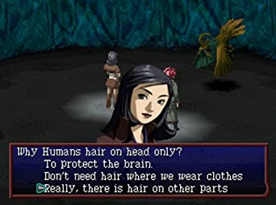
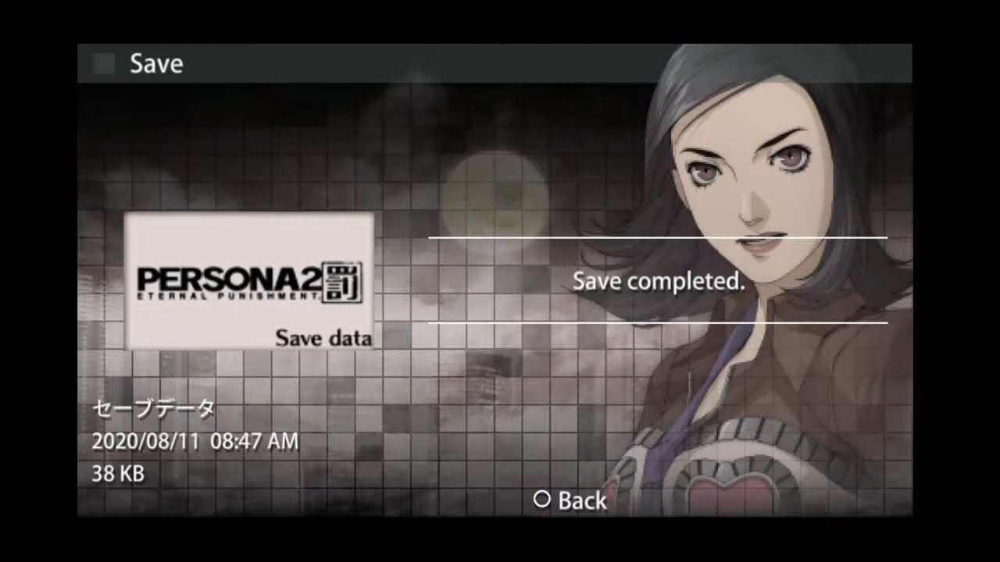
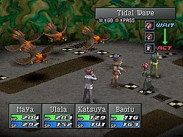
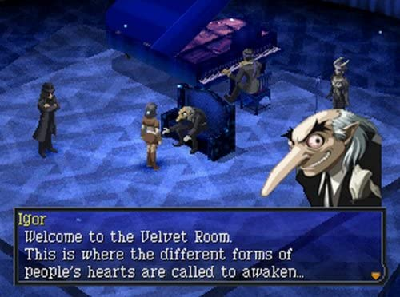
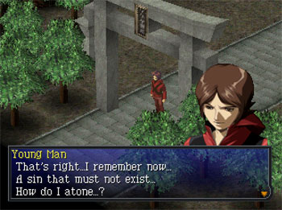

Jugabilidad
Escenario y personaje
Rankings
Persona 2: Eternal Punishment es un videojuego de rol desarrollado por Atlus y, cronologicamente, la tercera entrega de la serie Persona , una subserie de la
franquicia Megami Tensei . Fue publicado originalmente en 2000 por Atlus en Japon y America del Norte para PlayStation . El juego fue mas tarde rehecho por Atlus
para PlayStation Portable . Esta version, lanzada en Japon en 2012, no recibio un lanzamiento en el extranjero. En respuesta a esto, la version de PlayStation se
lanzo en PlayStation Network en 2013.
Eternal Punishment tiene lugar en la ficticia ciudad japonesa de Sumaru y es una secuela directa de Persona 2: Innocent Sin . El juego, que tiene lugar unos
meses despues de Innocent Sin , sigue a la reportera Maya Amano mientras investiga la maldición del Guasón, un fenómeno maligno en el que los deseos y los rumores de
las personas se hacen realidad y provocan el caos. Durante sus investigaciones, ella y otros que se unen a ella adquieren la capacidad de invocar Personas, aspectos
personificados de sus personalidades. El juego presenta un juego de batalla por turnos, donde los personajes usan sus Personas en la batalla contra los demonios, y un
sistema de rumores separado, donde los rumores que se extienden por la ciudad pueden influir en los eventos a favor de los personajes, ya sean malos o buenos.
A mitad de la produccion de Innocent Sin , el escritor Tadashi Satomi sintio que se necesitaba un nuevo punto de vista ademas de Tatsuya, sentando las bases para
Eternal Punishment . El productor original (Kouji Okada), el disenador de personajes (Kazuma Kaneko) y los compositores (Toshiko Tasaki, Kenichi Tsuchiya y
Masaki Kurokawa) regresaron junto a Satomi. El segundo juego comenzo a desarrollarse despues de que se completo Innocent Sin , y aunque reutilizo la mayoria de los
activos de Innocent Sin, se mejoraron la jugabilidad y el sistema Rumor. El tema principal del juego, "Change Your Way", fue escrito por la cantautora inglesa Elisha
La'Verne basandose en la premisa del juego. La recepción del juego en Japon y Occidente ha sido generalmente positiva, y los revisores aprecian las mejoras sobre
Innocent Sin , la trama, los sistemas de juego y la localizacion mejorada en comparacion con la Persona original .
 |
JUGABILIDAD
Persona 2: Eternal Punishment es un juego de rol en el que el jugador toma el control de un grupo de personajes que exploran la ciudad ficticia de Sumaru.
La camara sigue a la fiesta desde una perspectiva superior en angulo ajustable . La ciudad en general se navega usando un mapa del mundo.Un elemento clave de la
historia y el juego es el sistema de rumores: despues de que los personajes escuchan un rumor, pueden difundir ese rumor por la ciudad usando ciertos personajes
y esos rumores pueden otorgar a los personajes elementos especiales u otros efectos positivos o negativos.
Las batallas consisten tanto en peleas de jefes relacionadas con la historia como en encuentros aleatorios con enemigos estandar. Las batallas se basan en turnos
con los personajes del jugador y los enemigos moviendose alrededor de un pequeno campo de batalla para realizar acciones. Una vez que el jugador ha presentado su
estrategia en el menu de batalla, los personajes realizan sus acciones asignadas hasta que la batalla termina con la victoria de un lado o el jugador detiene la
accion para cambiar de estrategia. En lugar del sistema de batalla basado en cuadriculas de Persona original , los miembros del grupo y las unidades enemigas
actuan en la misma fase de un turno, en lugar de estar restringidos por su ubicacion en el campo.
Durante la batalla, los jugadores lanzan hechizos usando una Persona asignada: cada hechizo drena el medidor de Puntos de Hechizo de un personaje. Cada Persona
tiene diferentes fortalezas y debilidades elementales, y se pueden usar diferentes Personas para defensa, curacion o ataques elementales. Si bien una Persona es
originalmente bastante debil, si se usa lo suficiente, alcanzara un rango mas alto, siendo el Rango 8 el mas alto posible. A medida que aumenta el rango de la Persona
esa Persona puede lanzar hechizos mas poderosos. Ademas de las acciones individuales, el jugador puede alinear personajes para desencadenar un Fusion Spell: cuando
dos o mas miembros del grupo usan una secuencia determinada de hechizos, se uniran automaticamente para generar un poderoso ataque o ayudar al grupo a sobrevivir en
la batalla.Durante las batallas, tanto los personajes como las Personas ganan puntos de experiencia. El jugador tiene la opcion de activar una opcion de Auto-batalla
haciendo que el combate se desarrolle sin la interaccion del jugador.
Durante la batalla, el jugador puede conversar con los enemigos, aunque estan restringidos a un solo conjunto de opciones de dialogo en lugar de cuatro como en la
Persona original.. Si el jugador logra hablar con el enemigo usando el personaje correcto, hace que el enemigo abandone el campo de batalla y gana una carta de
hechizo (una carta del Tarot vinculada a uno de los Arcanos o familia de Personas), que puede usarse para crear Personas en un lugar llamado Velvet Room. En Velvet
Room, el jugador puede convocar a una nueva Persona que pertenece al grupo familiar de Persona particular de una carta de hechizo. A medida que un personaje gana
niveles de experiencia, aparecen Personas mas poderosas del grupo de una carta de hechizo. Ademas de las cartas de hechizos preestablecidas, el jugador tambien puede
obtener cartas de habilidad en blanco formando contratos con enemigos a traves de la conversacion correcta. Estas tarjetas de habilidades en blanco se pueden adaptar
para adaptarse a una familia de Persona elegida.
 |
ESCENARIO Y PERSONAJES
 |
Ambientada unos meses despues del final de Persona 2: Innocent Sin , Eternal Punishment tiene lugar en 1999 en Sumaru, una ciudad costera ficticia en Japon con una
poblacion de 1,28 millones, sus propias estaciones de television y una estructura abandonada. desde sus cimientos durante el periodo de los Reinos Combatientes .
Muchos de los personajes provienen de dos escuelas secundarias en Sumaru: Seven Sisters , una prestigiosa escuela que es el escenario de Innocent Sin
y la menos prestigiosa Kasugayama. Todos los protagonistas manejan Personas, manifestaciones de sus personalidades. Philemon, una personificacion benevola
del inconsciente colectivo de la humanidad, les otorgo la capacidad de manejar Personas. Se dice que los eventos de Innocent Sin se derivan de una competencia
entre Philemon y su opuesto Nyarlathotep para ver si los humanos podian encontrar un proposito superior en la vida a pesar de abrazar emociones contradictorias.
Durante los eventos de Innocent Sin , Nyarlathotep influyo en los eventos a su favor y todo el mundo, excepto la ciudad de Sumaru, fue destruido. Para restablecer los
eventos, el grupo uso el poder del Inconsciente Colectivo para querer el evento clave que causo los eventos de Innocent Sin .fuera de existencia a cambio de sus
recuerdos de esos eventos: esto creo una linea de tiempo alternativa, con la linea de tiempo de Innocent Sin existiendo como un "Otro Lado" separado.Un elemento clave
de la historia de Eternal Punishment es Kegare , una energia negativa que puede poseer a los humanos y desencadenar aumentos en el crimen y la perpetuacion de mas
Kegare.
La protagonista principal de Eternal Punishment es Maya Amano, una reportera de la revista para adolescentes "Coolest" que era un personaje jugable en Innocent Sin .
Otros se unen a ella en su aventura, incluidas personas que estuvieron involucradas en los eventos de Innocent Sin : Tatsuya Suou, estudiante de Seven Sisters y
protagonista principal de Innocent Sin ; Ulala Serizawa, amiga de la escuela de Maya y aspirante a disenadora de moda; Baofu, un ex fiscal que busca venganza contra
la mafia taiwanesa; y Katsuya Suou, el hermano mayor de Tatsuya y sargento del Departamento de Policia de la ciudad de Sumaru. Los antagonistas que regresan incluyen
a Tatsuya Sudou, un loco que estuvo involucrado en el incidente que precipito los eventos de Innocent Sin .; y Takahisa Kandori, un ex sirviente de Nyarlathotep y el
principal antagonista de Revelations: Persona que resucita a traves del poder de Kotodama . Kandori a su vez sirve a Tatsuzou Sudou, el padre de Tatsuya Sudou.
Otros dos personajes centrales de Revelations: Persona , Kei Nanjo y Eriko Kirishima, actuan como personajes secundarios y personajes jugables opcionales.
Los otros protagonistas de Innocent Sin (Eikichi "Michel" Mishina, Lisa "Ginko" Silverman, Jun Kashihara) desempenan papeles secundarios menores.
 |
RANKINGS
Durante su primera semana de lanzamiento en Japón, Eternal Punishment alcanzo la cima de las listas de ventas japonesas, vendiendo 106 563 copias.
La semana siguiente, el juego todavia estaba entre los cinco primeros, vendiendo 16.333 mas y elevando las ventas a 122.896. A finales de ano, ocupo el puesto 60
en los titulos mas vendidos de Japon del ano, con ventas finales por un total de 200.103 unidades. La nueva version de PSP debuto en el puesto numero 3 en las
listas de ventas japonesas, vendiendo 24.547 copias.La semana siguiente, vendio otros 4.885, pero habia bajado al puesto 20. Para octubre de 2012, como se
indica en Index Holding. Segun los datos de ventas anunciados, el juego habia vendido solo 60.000 copias, lo que lo coloca muy por detras de otros titulos de Atlus como
Etrian Odyssey IV: Legends of the Titan para Nintendo 3DS y Persona 4 Golden para Vita.
Al mismo tiempo, su calificacion total fue de un 83/100, siendo un juego promedio aun, pero la mejor
calificacion de la serie hasta ese punto.
 |
Menu principal |